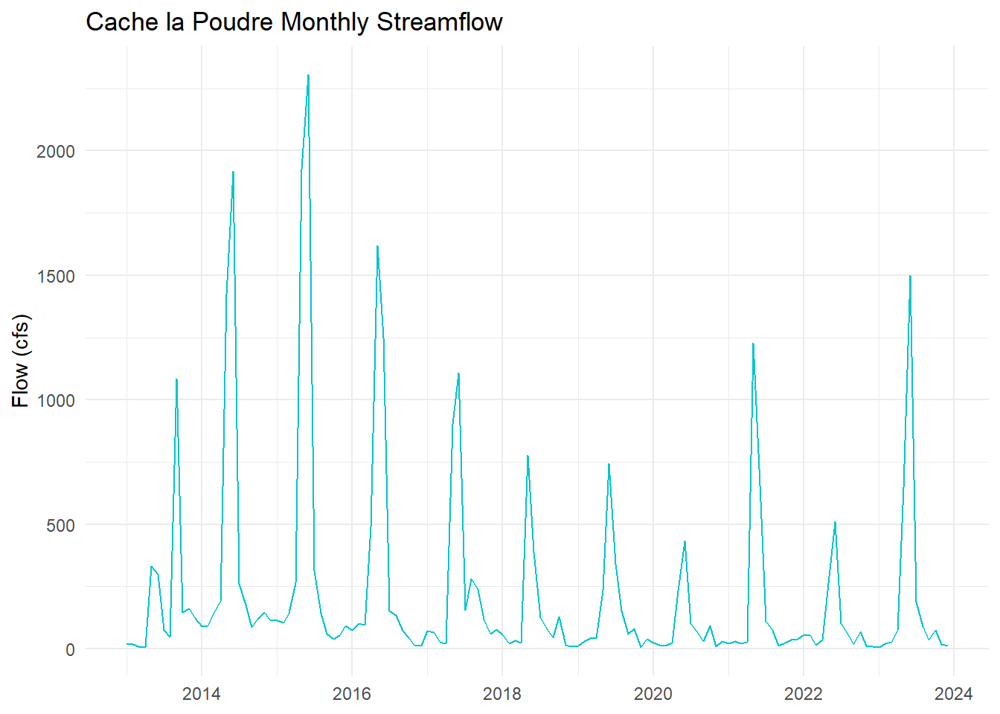
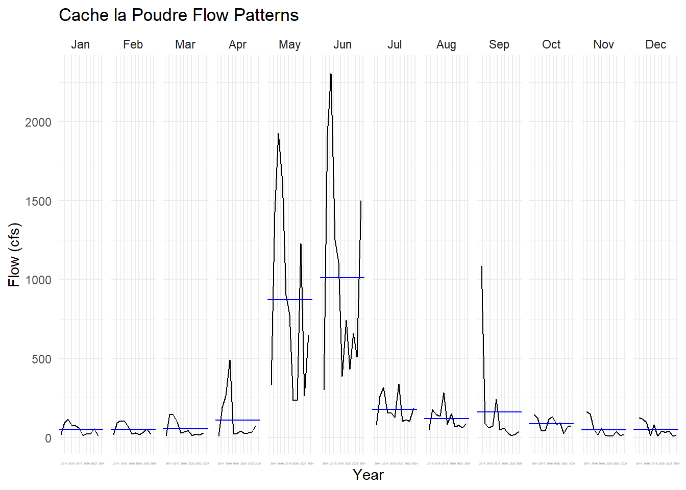
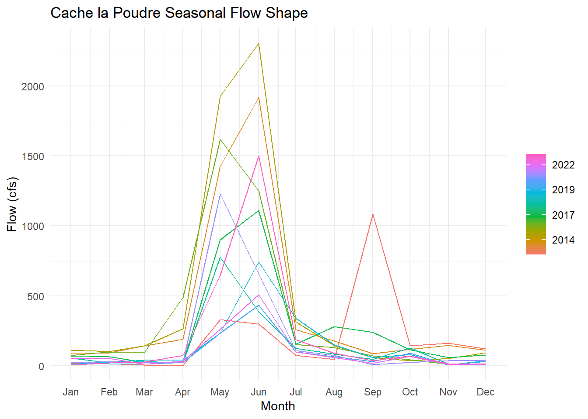
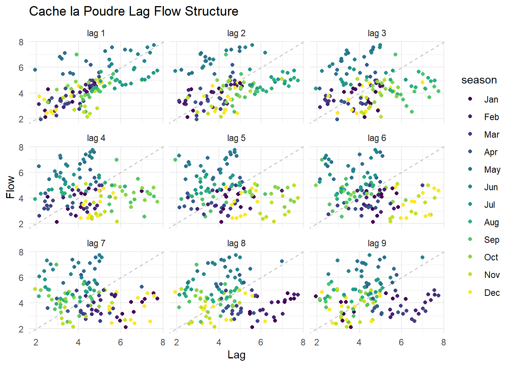
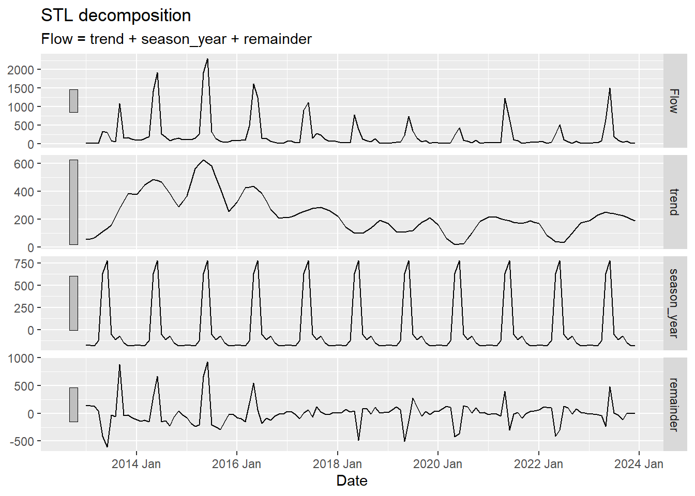
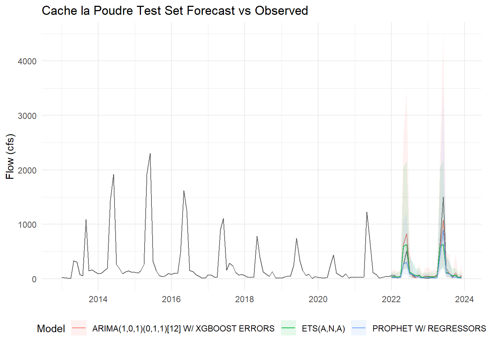
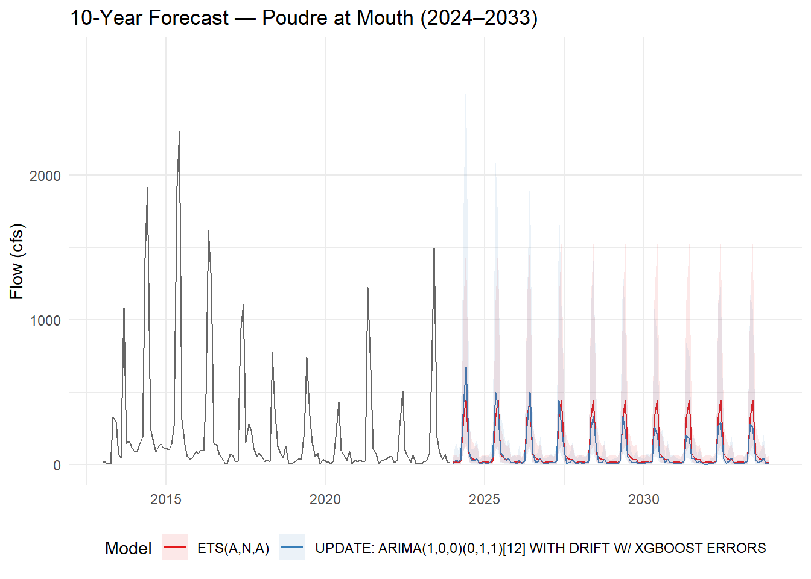

Using Modeltime to predict future streamflow on the Cache la Poudre River
Author
Jocelyn Cramer
Introduction
In this lab you will download streamflow data from the Cache la Poudre River (USGS site 06752260) and analyze it using the time series methods introduced in lecture. You will then use modeltime to predict future streamflow using both the time structure of the series and exogenous climate predictors.
This mirrors the Lees Ferry forecasting example from lecture — same dataRetrieval pipeline, same modeltime workflow, but now applied to a river you can see from campus. Like Lees Ferry, the Poudre is an operational water-supply system: Fort Collins, Loveland, and Greeley all depend on it, and the flows you forecast here directly inform how water managers plan deliveries.
library(tidyverse)
Warning: package 'tidyverse' was built under R version 4.5.3
Warning: package 'terra' was built under R version 4.5.3
library(exactextractr)
Warning: package 'exactextractr' was built under R version 4.5.3
library(tidymodels)
Warning: package 'tidymodels' was built under R version 4.5.3
Warning: package 'dials' was built under R version 4.5.3
Warning: package 'infer' was built under R version 4.5.3
Warning: package 'modeldata' was built under R version 4.5.3
Warning: package 'parsnip' was built under R version 4.5.3
Warning: package 'recipes' was built under R version 4.5.3
Warning: package 'rsample' was built under R version 4.5.3
Warning: package 'tailor' was built under R version 4.5.3
Warning: package 'tune' was built under R version 4.5.3
Warning: package 'workflows' was built under R version 4.5.3
Warning: package 'workflowsets' was built under R version 4.5.3
Warning: package 'yardstick' was built under R version 4.5.3
library(tsibble)
Warning: package 'tsibble' was built under R version 4.5.3
library(feasts)
Warning: package 'feasts' was built under R version 4.5.3
Warning: package 'fabletools' was built under R version 4.5.3
library(modeltime)
Warning: package 'modeltime' was built under R version 4.5.3
library(timetk)
Warning: package 'timetk' was built under R version 4.5.3
library(tseries) # for stationarity tests
Getting the Data
Streamflow
Download daily streamflow for the Poudre at Mouth (USGS 06752260) and aggregate to monthly means. This is the same readNWISdv() + renameNWISColumns() pipeline from Lab 1 — the only addition is yearmonth() from tsibble to create a monthly time index.
We will use climateR::getTerraClim() to download monthly climate data for the Poudre basin (max temperature, precipitation, solar radiation). The exactextractr package spatially averages each raster layer over the basin polygon.
basin <-findNLDI(nwis ="06752260", find ="basin")sdate <-as.Date("2013-01-01")edate <-as.Date("2023-12-31")gm <-getTerraClim(AOI = basin$basin,var =c("tmax", "ppt", "srad"),startDate = sdate,endDate = edate) |>unlist() |>rast() |>exact_extract(basin$basin, "mean", progress =FALSE)historic <-mutate(gm, id ="gridmet") |>pivot_longer(cols =-id) |>mutate(name =sub("^mean\\.", "", name)) |> tidyr::extract(name, into =c("var", "index"), "(.*)_([^_]+$)") |>mutate(index =as.integer(index)) |>mutate(Date =yearmonth(seq.Date(sdate, edate, by ="month")[as.numeric(index)])) |>pivot_wider(id_cols = Date, names_from = var, values_from = value) |>right_join(poudre_flow, by ="Date")# Validate: should have 132 rows (11 years × 12 months). If fewer, climate data# is missing for some months and those flow months were silently dropped.stopifnot("Climate join dropped flow months — check GridMET download"=nrow(historic) ==132)
Future Climate (MACA)
Any time exogenous predictors are used for forecasting, future values of those predictors must also be available. We use MACA — a statistically downscaled climate dataset developed by the same group as GridMET — to get projected temperature, precipitation, and solar radiation through 2033.
Two differences from GridMET: temperature is in Kelvin (subtract 273.15 for °C) and variable names differ slightly.
sdate <-as.Date("2024-01-01")edate <-as.Date("2033-12-31")maca <-getMACA(AOI = basin$basin,var =c("tasmax", "pr", "rsds"),timeRes ="month",startDate = sdate,endDate = edate) |>unlist() |>rast() |>exact_extract(basin$basin, "mean", progress =FALSE)future <-mutate(maca, id ="maca") |>pivot_longer(cols =-id) |>mutate(name =sub("^mean\\.", "", name)) |> tidyr::extract(name, into =c("var", "index"), "(.*)_([^_]+$)") |>mutate(index =as.integer(index)) |>mutate(Date =yearmonth(seq.Date(sdate, edate, by ="month")[as.numeric(index)])) |>pivot_wider(id_cols = Date, names_from = var, values_from = value)# Rename the 3 climate columns to match GridMET names (Date column stays first)stopifnot("Unexpected MACA column count"=ncol(future) ==4)names(future)[2:4] <-c("ppt", "srad", "tmax") # order matches getMACA var requestfuture <-mutate(future, tmax = tmax -273.15) # Kelvin → °C
Your Turn
1. Convert to tsibble
Convert historic to a tsibble object using as_tsibble(). A tsibble is a tidy time series data frame — it retains the date index and integrates with feasts functions for decomposition and visualization. Think of it as a tibble that knows it is ordered in time.
Poudre <-as_tsibble(historic, index = Date)
2. Plot the Time Series
Use ggplot to plot monthly Flow over time. Use plot_ly() from plotly for an interactive version — this lets you zoom into specific years or hover over values.
Plot_1 <-ggplot(Poudre, aes(x =as.Date(Date), y = Flow)) +geom_line(color ="turquoise3") +labs(title ="Cache la Poudre Monthly Streamflow", y ="Flow (cfs)", x =NULL) +theme_minimal()Plot_1

plot_ly(Poudre, x =~as.Date(Date), y =~Flow, type ="scatter", mode ="lines", line =list(color ="maroon")) |>layout(title ="Cache la Poudre Monthly Streamflow (Interactive)", xaxis =list(title ="Date"),yaxis =list(title ="Flow (cfs)"))
3. Seasonal Diagnostics
Before fitting any model, inspect the seasonal structure using two complementary feasts plots.
Subseries plot — one panel per month, each line is one year, the blue line is the monthly mean across all years:
gg_subseries(Poudre, y = Flow) +labs(title ="Cache la Poudre Flow Patterns", y ="Flow (cfs)", x ="Year") +theme_minimal() +theme(axis.text.x =element_text(size =2))
Warning: `gg_subseries()` was deprecated in feasts 0.4.2.
ℹ Please use `ggtime::gg_subseries()` instead.
ℹ Graphics functions have been moved to the {ggtime} package. Please use
`library(ggtime)` instead.

Seasonal plot — each line is one year plotted over the calendar cycle. Parallel lines = stable seasonal shape; diverging lines = changing pattern:
gg_season(Poudre, y = Flow) +labs(title ="Cache la Poudre Seasonal Flow Shape", y ="Flow (cfs)", x ="Month") +theme_minimal()
Warning: `gg_season()` was deprecated in feasts 0.4.2.
ℹ Please use `ggtime::gg_season()` instead.
ℹ Graphics functions have been moved to the {ggtime} package. Please use
`library(ggtime)` instead.

Describe what you see. How are “seasons” defined in these plots? Is the seasonal shape consistent across years, or does it change? What physical process drives the May–June peak?
The period between May and June in both plots shows significantly higher flows (cfs) compared to the rest of the year, represented as baseflow conditions. There is also a noticeable spike in September 2013, likely caused by a major rainfall or late-season snowfall event. Seasons are defined by monthly variability patterns in stream discharge throughout the year. Overall, the hydrographs display a characteristic seasonal pattern common in western snowmelt-driven rivers, where streamflow increases sharply during late spring and early summer as mountain snowpack melts (Stewart et al. 2005). Although the magnitude of flow varies considerably between years, the timing of peak discharge remains consistent. This indicates that the watershed is strongly influenced by snowfall accumulation and snowmelt as the dominant form of precipitation input. Because this region is located in the Rocky Mountains, it is expected that the Cache la Poudre River would follow trends typical of snowmelt-dominated mountain watersheds (Barnett et al. 2005).
Barnett et al. (2005). Potential impacts of a warming climate on water availability in snow-dominated regions. Nature, 438(7066), 303–309. https://doi.org/10.1038/nature04141.
Stewart et al. (2005). Changes toward earlier streamflow timing across western North America. U.S. Geological Survey. https://pubs.usgs.gov/fs/2005/3018/pdf/FS2005_3018.pdf.
4. Stationarity and Autocorrelation
Two diagnostics that directly inform ARIMA model selection:
Lag plot — plots Flow against its own lagged values. Strong linear patterns = high autocorrelation (ARIMA has something to work with). A diffuse cloud = no memory. Use log1p(Flow) — on the raw scale, peak months compress all other observations into the corner and hide the structure.
Poudre |>mutate(log_flow =log1p(Flow)) |>gg_lag(y = log_flow, geom ="point") +labs(title ="Cache la Poudre Lag Flow Structure", x ="Lag", y ="Flow") +theme_minimal()
Warning: `gg_lag()` was deprecated in feasts 0.4.2.
ℹ Please use `ggtime::gg_lag()` instead.
ℹ Graphics functions have been moved to the {ggtime} package. Please use
`library(ggtime)` instead.

Stationarity tests — ARIMA requires a stationary series (constant mean and variance). Test formally before fitting:
# Test on log_flow — that's what ARIMA will actually modellog_flow_vec <-log1p(Poudre$Flow)# ADF: H0 = non-stationary; p < 0.05 rejects non-stationarity → series IS stationaryadf.test(log_flow_vec)
Warning in adf.test(log_flow_vec): p-value smaller than printed p-value
Augmented Dickey-Fuller Test
data: log_flow_vec
Dickey-Fuller = -7.3292, Lag order = 5, p-value = 0.01
alternative hypothesis: stationary
# KPSS: H0 = stationary; p < 0.05 rejects stationarity → series is NOT stationarykpss.test(log_flow_vec)
KPSS Test for Level Stationarity
data: log_flow_vec
KPSS Level = 0.50753, Truncation lag parameter = 4, p-value = 0.03997
What do the tests tell you? If the series is non-stationary, ARIMA will need d ≥ 1 (differencing). Does the lag plot support the same conclusion?
The Augmented Dickey-Fuller (ADF) test revealed a Dickey-Fuller statistic of -7.3292, a lag order of 5, and a p-value of 0.01. This suggests the log-transformed flow series is stationary because the result is statistically significant. In contrast, the KPSS Test for Level Stationarity revealed a KPSS level of 0.50753, a truncation lag parameter of 4, and a p-value of 0.03997. This test was also significant, but it suggests the flow series is non-stationary, which contradicts the ADF test. Due to the remaining seasonal structure in the river flow data, the series is not completely stationary and requires a differencing term (d ≥ 1). The lag plots further support this conclusion by showing clear clustering patterns by season.
5. Decomposition
Use model(STL(...)) to decompose the time series into trend, seasonality, and remainder. Choose a trend window size you feel is appropriate and justify your choice. Extract components with components() and visualize with autoplot().
Warning: `autoplot.dcmp_ts()` was deprecated in fabletools 0.6.0.
ℹ Please use `ggtime::autoplot.dcmp_ts()` instead.
ℹ Graphics functions have been moved to the {ggtime} package. Please use
`library(ggtime)` instead.

Describe what you see:
What does the trend tell you about long-term changes in Poudre flow? Is there evidence of a decline consistent with climate change or upstream demand?
What drives the seasonal component? (Hint: snowmelt, irrigation withdrawals, reservoir releases)
Are there any spikes in the remainder that correspond to anomalous years you can identify?
The trend line indicating changes in the Cache la Poudre River over the last 10 years shows clear seasonal differences in streamflow. Although the data indicates a significant difference in flow between 2013–2016 and 2016–2024, the earlier period likely reflects wetter conditions and above-average snowpack in northern Colorado during those years. This does not mean long-term trends are not declining, but the magnitude of decline is less pronounced because the earlier years were unusually wet. Therefore, there is still evidence suggesting climate-related declines in flow, although a longer dataset would provide a more reliable long-term average. The seasonal component is primarily driven by mountain snowmelt, which is characteristic of Rocky Mountain hydrology (Barnett et al. 2005). The Cache la Poudre River experiences strong spring runoff pulses from melting snowpack, followed by lower flows during late summer and fall when irrigation demand increases and reservoir operations regulate streamflow (Cache n.d.). The remainder component highlights anomalous flow events cannot be completely visualized in the seasonal or trend sections. The largest anomalies occur between 2013–2016, corresponding to wetter years and high runoff conditions, while 2023 also appears as an above-average flow year relative to the surrounding period.
Cache la Poudre River National Heritage Area. (n.d.). Water storage. https://poudreheritage.org/water-storage/.
Barnett et al. (2005). Potential impacts of a warming climate on water availability in snow-dominated regions. Nature, 438(7066), 303–309. https://doi.org/10.1038/nature04141.
National Oceanic and Atmospheric Administration (NOAA) (2014). Monthly climate report for North America: December 2014. National Centers for Environmental Information. https://www.ncei.noaa.gov/access/monitoring/monthly-report/snow/201413.
Modeltime Prediction
Data Preparation
Convert the historic tsibble and future tibble to plain tibbles with a Date column for modeltime. All predictor columns must be present in both the historic and future datasets — this is what enables the 10-year climate-driven forecast.
Streamflow is strictly non-negative but right-skewed — snowmelt peaks dwarf base-flow months. To prevent models from predicting negative flows, add a log-transformed response with log1p(Flow) (log(Flow + 1), safe when flow is near zero). Fit all models on log_flow; back-transform predictions with expm1() (= exp(x) - 1) to return to cfs units.
Hold out the last 24 months (2022–2023) as the test set. This mirrors the assess = "60 months" logic from the CO₂ and Lees Ferry examples — the test set is always the most recent data, never a random sample.
# Note: time_series_split() is deterministic — it always cuts at the same point# regardless of the seed. set.seed() is kept here as a tidymodels convention# (some resampling functions are random), but removing it gives identical results.set.seed(10291991)splits <-time_series_split(Poudre_Table, assess ="24 months", cumulative =TRUE)
Using date_var: date
training <-training(splits)testing <-testing(splits)
Model Definition
Choose at least three models — one ARIMA and one Prophet are required. Store model specifications in a list:
Models <-list(# ARIMA + XGBoost residual boosting — picks up nonlinear climate relationshipsarima_boost() |>set_engine("auto_arima_xgboost"),# Prophet — handles trend breaks, missing data, and multiple seasonalitiesprophet_reg() |>set_engine("prophet"),# Exponential smoothing — strong baseline for multiplicative seasonal data exp_smoothing() |>set_engine("ets"))
Model Fitting
Fit all models to the training data on the log scale. Exclude the raw Flow column so models only see log_flow as the response — each engine handles date and climate predictors internally.
Models_2 <-map(Models, ~fit(.x, log_flow ~ ., data =select(training, -Flow)))
frequency = 12 observations per 1 year
Disabling weekly seasonality. Run prophet with weekly.seasonality=TRUE to override this.
Disabling daily seasonality. Run prophet with daily.seasonality=TRUE to override this.
Calibrate on the test set (2022–2023) to compute out-of-sample accuracy metrics. Pass select(testing, -Flow) so calibration uses the log-scale response:
Describe what you see. Use these benchmarks to interpret the numbers:
MASE < 1 — the model beats a naïve seasonal forecast (last year’s same month)
MAPE — intuitive % error, but inflated in low-flow months when Flow ≈ 0
RMSE — penalizes large errors heavily; compare to mean test-period flow for context
Do boosted models (ARIMA-boost, Prophet-boost) outperform their base versions? If so, the nonlinear climate signal is worth capturing.
Evaluation of the three modeling methods (ETS[A,N,A], ARIMA, and Prophet with regressors) revealed that the ETS(A,N,A) model performed the best overall. This model had the lowest MAE (0.5107), MASE (0.5177), and RMSE (0.6212), while also producing the highest r-squared value (0.8198). Although ETS performed best, the differences between models were relatively small, as the lowest r-squared value was still fairly high at 0.783. Because all MASE values were below 1, each model outperformed a naïve seasonal forecast. MAPE values were also similar across models (15–18%), indicating relatively low forecasting error. RMSE values were similarly low and close between models, suggesting that all models were able to capture changes in streamflow (cfs) well. Overall, the boosted models (ARIMA and Prophet with regressors) did not outperform the simpler ETS model. This suggests that the ETS method was just as effective at capturing the seasonal variability in streamflow as the more complex boosted approaches.
Test Set Forecast
Forecast over the held-out test period and compare predictions to actuals. Back-transform with expm1() to return predictions to cfs. Two details matter: (1) expm1(x) is the exact inverse of log1p(x) and always returns values ≥ 0; (2) confidence interval lower bounds on the log scale can be slightly negative — floor them at 0 with pmax(.conf_lo, 0)before back-transforming so the ribbon never dips below zero cfs:
test_forecast <- calibration_table |>modeltime_forecast(new_data =select(testing, -Flow), actual_data = Poudre_Table) |>mutate(.value =expm1(.value), .conf_lo =expm1(pmax(.conf_lo, 0)), .conf_hi =expm1(.conf_hi))test_forecast |>filter(.key =="actual") |>ggplot(aes(x = .index, y = .value)) +geom_line(color ="grey40") +geom_line(data =filter(test_forecast, .key =="prediction"), aes(color = .model_desc)) +geom_ribbon(data =filter(test_forecast, .key =="prediction"),aes(ymin = .conf_lo, ymax = .conf_hi, fill = .model_desc), alpha =0.1) +labs(title ="Cache la Poudre Test Set Forecast vs Observed", x =NULL, y ="Flow (cfs)", color ="Model",fill ="Model") +theme_minimal() +theme(legend.position ="bottom")

Do predictions track actuals during the 2022–2023 test window? Are confidence intervals capturing observed values? Note any discontinuities at the 2022 boundary between training and test.
The predictions from the models somewhat track the actual values during the test window (2022–2023). They clearly capture the timing of seasonal peaks, particularly during spring snowmelt. However, the models vary in their ability to capture peak flow magnitudes. All models perform reasonably well in 2022, but they underestimate the larger peak flows observed in 2023. The ETS(A,N,A) model follows the observed flow most closely in 2022, with a slight overestimation, whereas the ARIMA model slightly underestimates flow in 2023 but remains the closest to the observed peak. The confidence intervals generally capture the observed values, especially during periods of low flow. However, the ARIMA model produces the largest confidence intervals, indicating greater uncertainty in forecasting for this method. There is also a slight discontinuity at the 2022 boundary, where the modeled values begin below the observed flow immediately after the training period.
Refit to Full Dataset
Refit all models to the complete 2013–2023 record before forecasting forward. Refitting allows auto-tuned models (auto.arima, ets) to re-optimize their parameters with more data:
refit_tbl <-modeltime_refit(calibration_table, data =select(Poudre_Table, -Flow))
frequency = 12 observations per 1 year
Disabling weekly seasonality. Run prophet with weekly.seasonality=TRUE to override this.
Disabling daily seasonality. Run prophet with daily.seasonality=TRUE to override this.
Do the accuracy metrics change after refitting? Why or why not?
There was very little change in the accuracy metrics after refitting the models. The best-performing model remained ETS(A,N,A), and all metric values stayed within a similar range. This suggests that refitting did not significantly improve forecasting performance. This makes sense because the unboosted ETS method already did a strong job capturing the dominant seasonal patterns in streamflow.
Forecast into the Future (2024–2033)
Use the refitted models with future_tbl as new_data to generate a 10-year climate-conditioned forecast. Back-transform with expm1():
Error: Problem occurred during prediction. Error in setup_dataframe(object,
df): Unable to parse date format in column ds. Convert to date format (%Y-%m-%d
or %Y-%m-%d %H:%M:%S) and check that there are no NAs.
future_forecast |>filter(.key =="actual") |>ggplot(aes(x = .index, y = .value)) +geom_line(color ="grey40") +geom_line(data =filter(future_forecast, .key =="prediction"), aes(color = .model_desc)) +geom_ribbon(data =filter(future_forecast, .key =="prediction"), aes(ymin = .conf_lo, ymax = .conf_hi, fill = .model_desc), alpha =0.1) +scale_color_brewer(palette ="Set1") +scale_fill_brewer(palette ="Set1") +labs(title ="10-Year Forecast — Poudre at Mouth (2024–2033)", x =NULL, y ="Flow (cfs)", color ="Model", fill ="Model") +theme_minimal() +theme(legend.position ="bottom")
Warning: Removed 2 rows containing missing values or values outside the scale range
(`geom_line()`).
Warning: Removed 2 rows containing missing values or values outside the scale range
(`geom_ribbon()`).

Wrap-up
Examine your 10-year forecast and reflect on the following:
Model agreement: Do ARIMA and Prophet project similar trajectories? If they diverge, what does that tell you about their different assumptions (statistical stationarity vs. flexible trend)?
The ARIMA and ETS(A,N,A) models project similar long-term trajectories, both capturing the strong seasonal patterns driven by snowmelt runoff. However, there is slight change beginning in 2024, where the ARIMA model overestimates flow, and again after 2030 when ARIMA begins to underestimate compared to the ETS(A,N,A). These differences reflect the assumptions of each models. The ETS(A,N,A) model maintains a more stable seasonal structure, whereas the ARIMA model is more sensitive to non-stationarity and variability. As a result, the ARIMA forecasts show greater fluctuations and compared to the ETS forecasts.
Forecast quality: Which model would you recommend to CWCB for water-supply planning? Justify with your accuracy metrics.
For hydrologic modeling recommendations to the CWCB, I would choose the ETS(A,N,A) model. The statistical results consistently showed that this model outperformed the other methods, including those incorporating boosting techniques. The model also demonstrated skill beyond a naive seasonal forecast, as indicated by a MASE value below 1. While the other models performed similarly, the ETS(A,N,A) model showed the strongest overall forecasting ability and the highest consistency. Its observation-based approach effectively captured the dominant seasonal hydrologic patterns of the Cache la Poudre River, making it a reliable tool for informing CWCB water-supply planning and management decisions.
Negative predictions: If any model predicts negative flow, explain why this happens and what you would do to fix it in a production context (hint: log-transformation of Flow before modeling).
Negative flow values are not clearly visible in the forecast plot, although modeled values consistently approach zero during low-flow periods. Values very close to zero could therefore be pushed below this threshold, resulting in unrealistic predictions. This issue can be addressed through log-transformation of the flow data before modeling. Log-transforming the data helps stabilize variability and ensures that forecasts remain positive.
Regressor value: The MACA climate projections assume a specific emissions scenario. How does uncertainty in those projections propagate into your streamflow forecast?
Uncertainty in the MACA climate projections propagates into the streamflow forecasts because the projections are based on assumptions about future greenhouse gas emissions and climate conditions. Snow-driven precipitation is vital for this environment, making streamflow highly sensitive to changes in temperature and precipitation patterns. Divergence in future emissions scenarios could therefore alter climate projections and subsequently influence predicted streamflow. As a result, uncertainty in the streamflow forecasts reflects both model performance and uncertainty in future climate conditions driven by emissions.
Improvement path: What information not in tmax, ppt, srad would most improve this forecast? (Consider: snowpack, upstream storage, irrigation demand.)
The information that would most improve this forecast would be accurate snowpack measurements. The Cache la Poudre River is strongly snowmelt-driven, so forecasting snowpack conditions would directly improve streamflow predictions. Additional useful information would include upstream reservoir storage and release data, along with irrigation demand and diversion needs. These variables would help better explain low-flow conditions and human influences on streamflow. While many other variables could improve the forecasts, it is also important to understand how those datasets are derived and whether they are themselves based on modeled estimates.
At this stage you have a working end-to-end time series forecasting pipeline — the same structural approach used by CWCB, USBR, and state water agencies for operational planning. The processes you learned in tidymodels apply directly here, and you can extend this framework with cross-validation (time_series_cv()), feature engineering (lag variables, rolling means), and hyperparameter tuning.
Going Further (Optional): Add an Upstream Regressor
In lecture we showed that adding Glenwood Springs flow as an exogenous regressor improved Lees Ferry forecasts because upstream conditions carry physical information the model can’t infer from time structure alone. Try the same approach here.
Download data from a headwater gage on the Poudre (e.g., North Fork Cache la Poudre, USGS 06746095) and add it as a predictor:
upstream <-readNWISdv(siteNumber ="06746095",parameterCd ="00060",startDate ="2013-01-01",endDate ="2023-12-31") |>renameNWISColumns() |># floor_date returns the 1st of each month as a Date — same type as pf_tbl$datemutate(date =floor_date(Date, "month")) |>group_by(date) |>summarise(upstream_flow =mean(Flow, na.rm =TRUE), .groups ="drop")
Warning in readNWISdv(siteNumber = "06746095", parameterCd = "00060", startDate
= "2013-01-01", : NWIS servers are slated for decommission. Please begin to
migrate to read_waterdata_daily.
# Use log_flow ~ . consistent with the main pipeline; exclude raw Flowmodels_reg <-map(Models, ~fit(.x, log_flow ~ .,data =select(training(splits_reg), -Flow)))
frequency = 12 observations per 1 year
Disabling weekly seasonality. Run prophet with weekly.seasonality=TRUE to override this.
Disabling daily seasonality. Run prophet with daily.seasonality=TRUE to override this.
frequency = 12 observations per 1 year
Does adding upstream flow improve MASE on the test set? If yes, the physical signal is worth including. If not, the climate data alone may be sufficient for monthly aggregation at this timescale.
Introducing upstream flow improved the performance of the models, especially the regression model with ARIMA errors. Regression with ARIMA produced the lowest MASE (0.534), lowest MAE (0.499), and lowest RMSE (0.621), improving enough to outperform ETS(A,N,A). The inclusion of upstream flow data decreased MASE values overall, indicating the importance of incorporating physical hydrologic information into the forecasts. Because upstream gauges can capture incoming flow conditions and snowmelt dynamics before they reach downstream locations, this improvement is expected. These results suggest that physical hydrologic predictors can improve forecasting performance, although the original model structures still performed relatively well on their own.